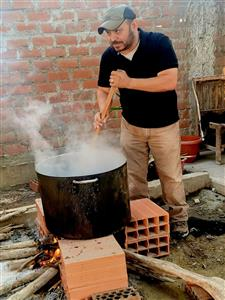
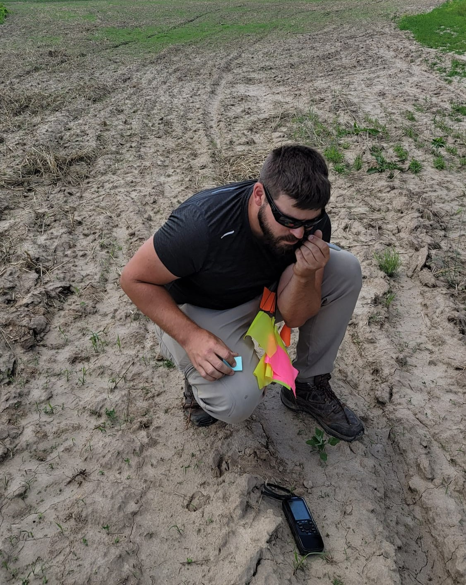
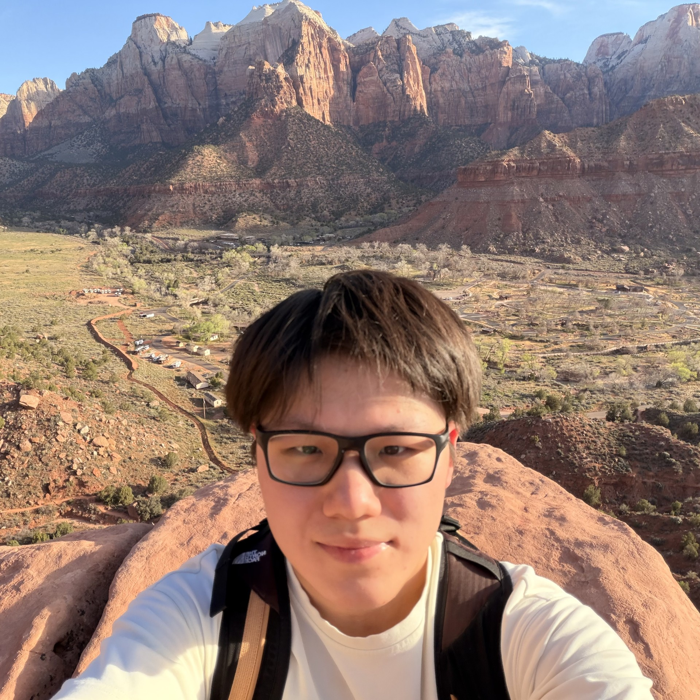

People
The QuantLab brings together principal investigators Dr. Erik Otárola-Castillo and Dr. Benjamin Schoville with postdoctoral researchers, graduate students, undergraduate research assistants, and collaborators working across scientific and quantitative anthropology, archaeology, and computational methods.
Scroll to meet current lab leadership, team members, collaborators, and former members connected to QuantLab research and mentoring.
Principal Investigators

Erik Otárola-Castillo, Ph.D.
Associate Professor of Anthropology at Purdue. Research in quantitative anthropology, AI, Bayesian inference, morphometrics, zooarchaeology, hunter-gatherer ecology, and computational methods.

Team Members
Current postdoctoral, graduate, and undergraduate researchers, and collaborators associated with QuantLab projects.

Postdoctoral Researcher
Graduate Student Collaborator
Narges Khatoon Shoaibi Nobarian
Graduate student in Anthropology at Purdue University and collaborator with the QuantLab through Amanda Veile’s Labor Lab. Her interests include geometric morphometrics as a tool for quantifying shape variation and linking form to function.
Undergraduate Research Assistants

Chase Peterson
Undergraduate research assistant working with the QuantLab.
Ricky Wong
Undergraduate research assistant majoring in computer science and data science interested in AI and statistical inference, working with the QuantLab.

Xin Zhang
Undergraduate research assistant majoring in Computer Science at Purdue University, with a focus on applying machine learning to lithic analysis.
Current collaborators.
Collaborators
Lab Alumni
Former lab members, trainees, and collaborators connected to QuantLab research and mentoring.